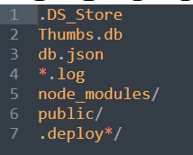
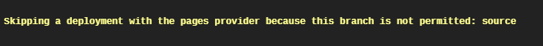
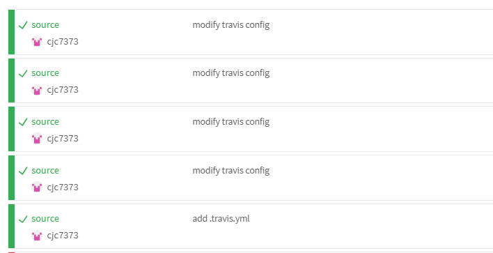

- CI
- Hexo

缘由
其实我想用 CI 来自动化部署博客很久了，只是因为懒，CI 又有很多新知识，担心自己的知识储备不够，于是一直咕咕咕。
前段时间装了 Arch 之后，我很想在两个系统之间同步写作进度，但是 Windows 的休眠和快速启动会导致在 Arch 下我只能以只读方式挂载 Windows 分区（我日常关机用休眠，所以拒绝关休眠）。原来设想的ln -s大法行不通了。
于是我想到了 CI。仔细一想其实也不复杂，无非是git push， git pull两下罢了。那么，Let's do it!
需求
我原来设想是博客同时部署在 Github Pages 和我的 VPS 上，而由于某些不可抗力~~（懒）~~后者并没有实现。所以需求就变得十分简单，commit 博客内容，CI 自动构建然后部署。
- 我更新博客之后，commit 然后 push 至 Github repo
- CI 自动构建博客
- CI 将构建完成的静态文件 push 至 Github repo
我原先使用的是hexo-deployer-git插件，通过hexo g -d部署，现在这个插件可以丢弃了。同时我的 Hexo 的很多配置都被我瞎改了，同时还有许多奇奇怪怪的模块可能需要清理（不如重新来一遍（大雾）），这些先不谈。
配置 Github Repo
在这个 Repo 中需要两个分支：
- master 用于存放构建完成的静态文件
- source 用于存放 Hexo 生成的博客源文件
对 Hexo 文件夹的操作如下：
git init
git remote add origin git@github.com:cjc7373/cjc7373.github.io.git
git checkout -b source
git add .
git commit -m "To use CI to automated deploy"
git push origin source:source
本来以为这个仓库会很大（整个文件夹大概 100M），突然发现它自带.gitignore文件，所以实际大小并没有多少。

然后在 Github 上将主分支切换为source分支。
配置 Travis CI
CI 访问仓库需要权限，可选择 Access Token 或者单独的 Deploy key，后者似乎有些麻烦，我选择了前者。当前需求应该只需要 repo 权限，然后在 Travis CI 的 Environment Variables 中加入这个 Token，注意不要勾选 Display value in build log。
然后就是编写.travis.yml了。 ~~正当我准备抄大佬们的配置的时候，忽然看到 Travis CI 官方提供了轮子，那就用吧QAQ（其实也没简单多少）~~，然后翻车了。

看了下文档，我也没搞懂每个字段的意思。所以还是自己来吧。
为了在 commit 记录中显示更新日期，我把 push 部分单独写成了 sh脚本。
.travis.yml:
language: node_js
node_js: stable
# 只监听 source 分支的改动
branches:
only:
- source
# 缓存依赖，节省持续集成时间
cache:
directories:
- node_modules
install:
- npm install
script:
- hexo clean
- hexo g
after_script:
- chmod +x ./deploy.sh # 添加可执行权限
- ./deploy.sh
deploy.sh:
1 2 3 4 5 6 7 8 9 10 11 12 13 14 15 16 17 18 19 | |
一开始忘了给deploy.sh可执行权限，CI 啥都没报错就退出了。。后来 token 又忘了写。。反正出了好多锅。。

（看着都是成功其实都是失败。。）
同时本地配合一下批处理，真正一键发布（滑稽
cd C:\Users\niuch\Documents\GitHub\blog\
git add .
git commit
git push
pause
后记
历经两个多小时，终于把 CI 弄好了。虽然对 CI 还是一知半解，不过总算开了个头，也基本实现了需求。
Travis CI 官方的文档很全，但是以我的英文水平看得很吃力（懒得看），中文资料的质量又参差不齐。所以还是要锻炼自己的英语水平啊。
参考资料
https://docs.travis-ci.com
https://www.ruanyifeng.com/blog/2017/12/travis_ci_tutorial.html
https://blessing.studio/deploy-hexo-blog-automatically-with-travis-ci/
https://blessing.studio/deploy-hexo-blog-automatically-with-travis-ci/